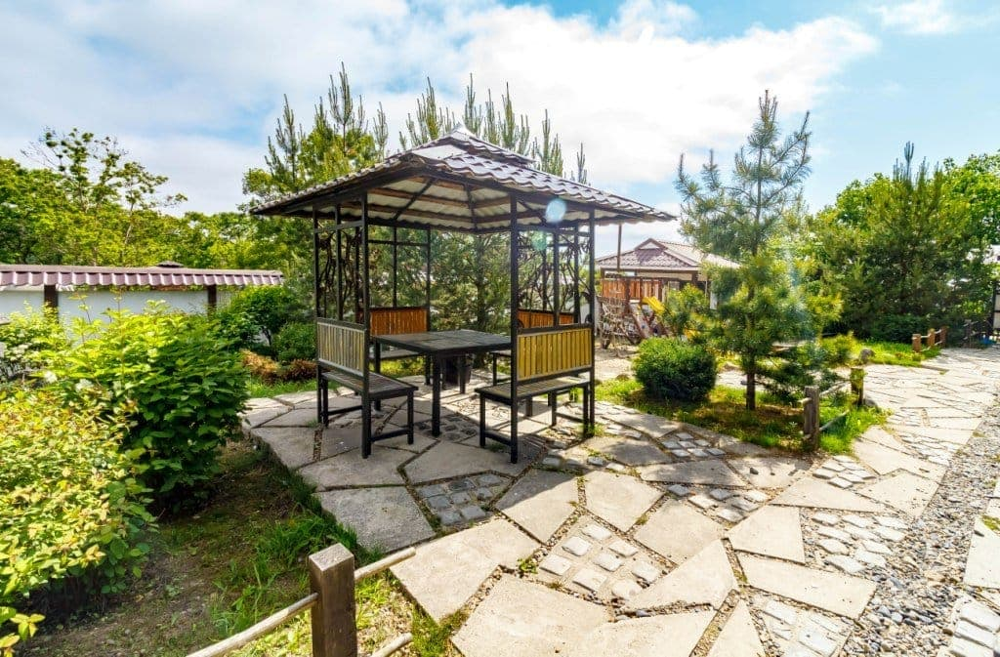
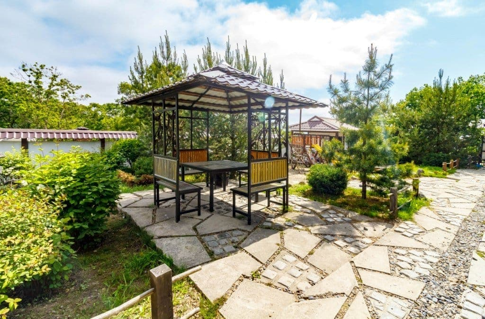

Бесплатные бассейны для проживающих в «38 самураях». К услугам гостей проживающих в домах Усадьбы «38 самураев» работают два бесплатных подогреваемых бассейна. Период работы — весь теплый сезон, с 01 мая по 30 сентября...
Публикации
События Усадьбы и информационные материалы.

Отдых в бассейнах — Усадьба «38 самураев»

Идет бронирование номеров на лето 2022 года
Традиционно, к новому летнему сезону, мы планируем разнообразные обновления и доработки: откроется кабинет аппаратного массажа и SPA. К вашим услугам будет представленно современное...

Отдых в Приморье на море в июле
Чтобы провести незабываемый отдых в Приморье в июле 2022 на песчаном пляже с прозрачной и теплой водой, нужно лишь знать о местах, где вода уже прогрета для купания. Знатоки приморского отдыха выбирают...
Отдых в бассейнах — Усадьба «38 самураев»
Бесплатные бассейны для проживающих в «38 самураях». К услугам гостей проживающих в домах Усадьбы «38 самураев» работают два бесплатных подогреваемых бассейна. Период работы — весь теплый сезон, с 01 мая по 30 сентября...
Идет бронирование номеров на лето 2022 года
Традиционно, к новому летнему сезону, мы планируем разнообразные обновления и доработки: откроется кабинет аппаратного массажа и SPA. К вашим услугам будет представленно современное...
Прочие материалы
Собрание материалов об отдыхе, достопримечательностях и туризме в Приморском крае.
-
Достопримечательности города Находка
Находка — самый южный город востока России, поэтому ее зачастую называют «окном в океан». Находка получила статус города в 1950 году...
-
Зимний отдых в Приморье
Это и прогулки по заснеженным городским паркам, и катание на сноуборде, и зимняя рыбалка, и незабываемый отдых в лесу, и, естественно, посещение горнолыжных баз Приморья...
-
«Розовое» озеро Ханка
Форма озера чем-то напоминает грушу, расширяющуюся в северной части. Площадь поверхности зависит от климатических и погодных условий...
-
Полуостров Гамова – лежбище морских котиков
Летом море у берегов полуострова прогревается до 23-х градусов, подводный мир очень богат и разнообразен, а вода - кристально чистая...
-
Зимний отдых в Приморье
Это и прогулки по заснеженным городским паркам, и катание на сноуборде, и зимняя рыбалка, и незабываемый отдых в лесу, и, естественно, посещение горнолыжных баз Приморья...
-
Достопримечательности города Находка
Находка — самый южный город востока России, поэтому ее зачастую называют «окном в океан». Находка получила статус города в 1950 году...
 
